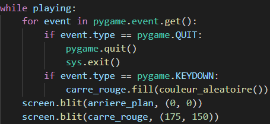

Partie théorique
Pouvoir interagir avec le jeu est l'un des principes les plus importants du jeu vidéo. Le joueur doit pouvoir interagir avec ce qui se passe à l'écran. Pour cela, nous pouvons utiliser la boucle évènementielle de Pygame for variable_evenement in pygame.event.get(). Il faut noter que pygame.event.get() renvoie une liste contenant des objets de la classe Event de Pygame. Chaque objet Event possède un attribut type qui permet différencier un objet Event d'un autre, type sert ainsi de référence pour chacun des objets Event. Nous utiliserons donc type pour détecter un évènement choisi. Comme avec event.type == pygame.QUIT. Mais par curiosité essayons d'afficher la valeur de pygame.QUIT
On remarque que pygame.QUIT vaut 256, ce qui correspond au numéro de référence de l'évènement, c'est-à-dire son attribut type. Nous pouvons obtenir tous les évènement de Pygame associés à leur valeur type grâce au programme suivant :

Notons que pygame.event.event_name() renvoie l'évènement (sous forme de chaîne de caractères) associé au nombre int reçu en paramètre. Par ailleurs si cette boucle for s'exécute 32848 fois, ce n'est pas un hasard. A partir de la valeur 32847 et jusqu'à la valeur 65535, l'évènement associé sera toujours UserEvent. Il faut également se rappeler qu'à la plupart des valeurs n'est associé aucun évènement. Si c'est le cas, alors la fonction event_name() renvoie Unknown au lieu du nom de l'évènement. La valeur "Unknown" ne nous intéresse pas du tout d'où l'intérêt de l'instruction if event != "Unknown". Focalisons-nous cependant sur quelques uns des évènements les plus importants :
| Numéro d'identification | Nom de l'évènement | Conditions d'activation |
|---|---|---|
| 256 | Quit | Fermeture de la fenêtre |
| 768 | KeyDown | Une touche du clavier a subi une pression |
| 769 | KeyUp | Une touche du clavier est relâchée |
| 1024 | MouseMotion | Le curseur de la souris est déplacé |
| 1025 | MouseButtonDown | Clic droit ou gauche |
| 1026 | MouseButtonUp | Clic droit ou gauche (relâché) |
| 32847-65535 | UserEvent | Evènement personnalisé |
Mais quel est le lien avec pygame.event.get() ? La réponse à cela est simple. pygame.event.get() renvoie la liste de tous les évènements qui se sont produits lors de son appel. Faisons un test en ajoutant juste avant la boucle évènementielle les instructions suivantes :

En exécutant le programme, nous remarquons que dès que l'on fait un clic droit ou gauche, que l'on déplace le curseur ou encore que l'on appuie sur une touche du clavier, le programme affiche une liste contenant les évènements provoqués. if liste_evenements peut sembler confus mais il s'agit simplement d'une façon plus "pythonesque" de dire if len(liste_evenements) > 0. Ainsi, détecter les évènements en Pygame consiste juste à parcourir la liste event.get(). Puis, pour chaque objet Event dans cette liste, on compare leur attribut type pour vérifier si l'évènement sélectionné correspond à l'évènement choisi. Nous pouvons donc savoir si un évènement s'est produit grâce à ce processus.
Partie pratique
Maintenant que nous connaissons l'aspect théorique des évènements de Pygame (et honnêtement ce n'est pas grave si nous n'avons pas tout compris), intéressons-nous aux aspects pratiques. Utiliser un évènement s'écrit en une ligne : if variable_evenement.type == constante_evenement où variable_evenement correspond au nom donné à la variable de la boucle évènementielle et constante_evenement représente le numéro d'identification de l'évènement choisi. Et n'oublions surtout pas que cette instruction doit être à l'intérieur de la boucle évènementielle ! Donnons-nous un objectif maintenant, nous devons essayer de faire apparaitre à l'écran la surface carre_rouge créée auparavant à la position (175; 150). Puis, chaque fois que le joueur appuiera sur une touche du clavier quelconque, ce même carré prendra une couleur aléatoire. Rappel : nom_surface.fill(couleur) permet de remplir une surface d'une couleur au choix, qui peut être sous format RGB c'est-à-dire un tuple contenant trois valeurs allant de 0 à 255. La fonction randint() du module random permet quant à elle de générer des nombres aléatoires. La fonction couleur_aleatoire() est donnée :
 Survoler pour voir la correctionRésultat attenduGestion du clavier
Nous avons réussi, mais nous ne sommes pas entièrement satisfaits car le carré change de couleur dès qu'on l'on appuie sur n'importe quelle touche alors qu'il serait évidemment bien mieux d'obtenir le même résultat mais avec une touche exclusive. Par exemple, chaque fois que l'on appuie sur la barre espace. Cela peut être facilement résolu car en plus de posséder un attribut type, certains évènements comme KeyDown ou KeyUp possèdent un attribut key qui fonctionne plus ou moins de la même manière que type notamment au niveau de la syntaxe : if variable_evenement.key == constante_touche. Par exemple, pour la barre espace :